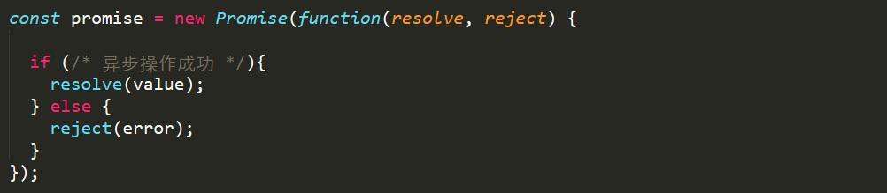
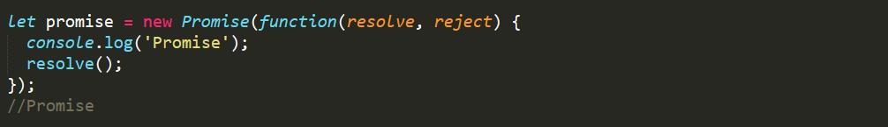
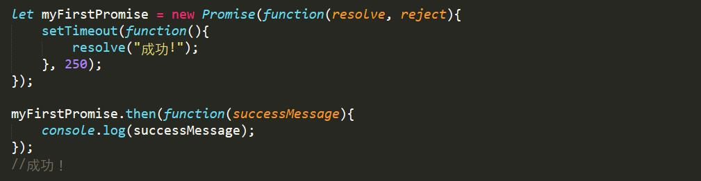
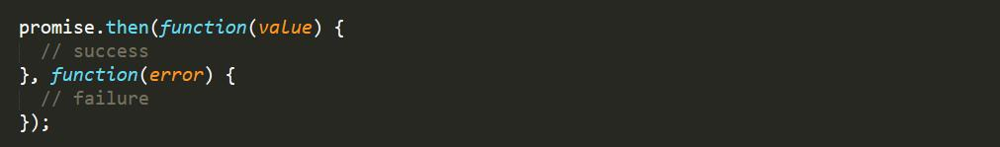
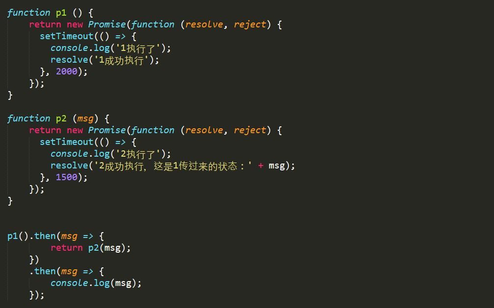
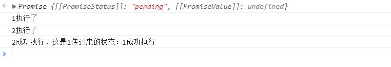
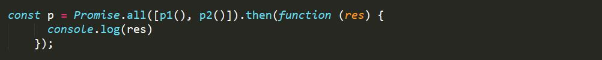
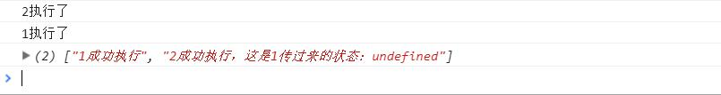
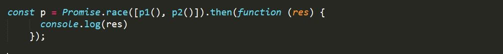
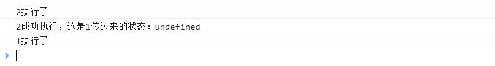

对Promise对象的简单理解
ES6提供了原生的promise对象，所谓的promise，其实是一种提供异步编程方法的对象，正如其名promise：承诺，该对象返回三种状态，并且无法被外界改变，这三个状态分别是fulfilled（已成功）、rejected（已失败）和pending（进行中），只有异步操作才能决定是哪一种状态，而且状态最终只会从pending变成fuifilled或rejected。
promise对象是一个构造函数，通过promise构造的对象通过传入两个函数作为参数，即resolve和reject，分别为异步操作成功时调用的函数和失败时调用的函数，并将执行的结果作为参数传递出去。
语法：
一个简单的promise实例：
有一点需要知道的是，一旦promise对象被创建就会立即被执行
.then()
promise提供一个then方法，指定resolved状态和rejected状态的回调函数
then方法可以接受两个回调函数作为参数。第一个回调函数是Promise对象的状态变为resolved时调用，第二个回调函数是Promise对象的状态变为rejected时调用。其中，第二个函数是可选的，不一定要提供。这两个函数都接受Promise对象传出的值作为参数。
同时带有成功时调用的函数和失败时调用的函数：
再看一个例子：
控制台执行结果：
上面代码中，p1和p2都返回Promise的实例，在后面的两个then方法中，将p1返回的状态作为参数传递给p2，p1的状态决定了p2的状态。因为promise在新建时会立即执行，所以会先输出前面两条msg，最后输出p2的状态。
Promise.all()
Promise.all方法用于将多个 Promise 实例，包装成一个新的 Promise 实例。

p的状态由p1、p2决定，分成两种情况。
（1）只有p1、p2的状态都变成fulfilled，p的状态才会变成fulfilled，此时p1、p2的返回值组成一个数组，传递给p的回调函数。
（2）只要p1、p2之中有一个被rejected，p的状态就变成rejected，此时第一个被reject的实例的返回值，会传递给p的回调函数。
通俗的讲，就是1请求、2请求同时发，两条响应都收到后再执行
Promise.race()
Promise.race方法同样是将多个 Promise 实例，包装成一个新的 Promise 实例。

只要p1、p2、p3之中有一个实例率先改变状态，p的状态就跟着改变。那个率先改变的 Promise 实例的返回值，就传递给p的回调函数。也就是说，其中一条收到请求就执行